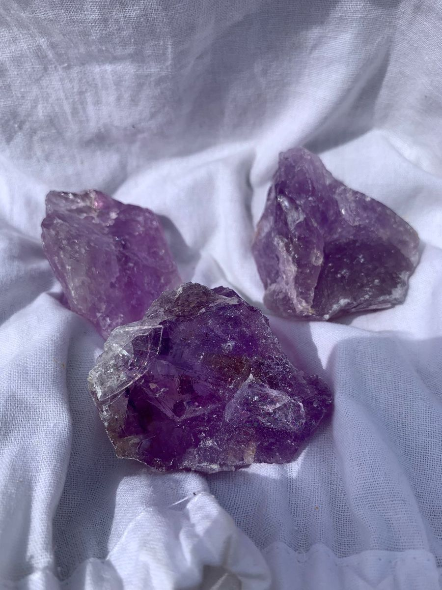
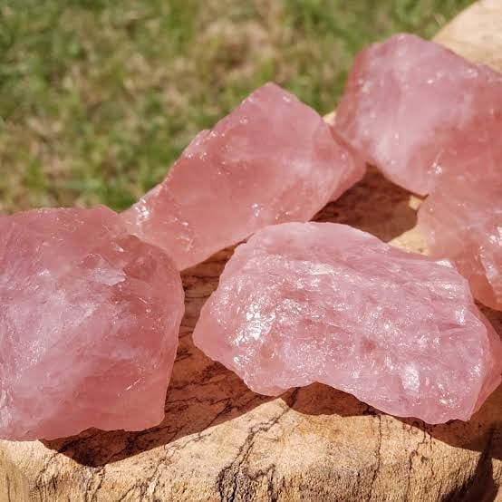
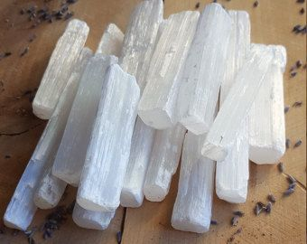
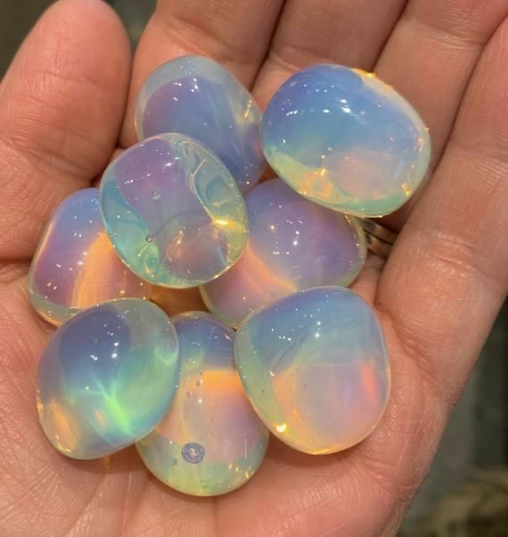
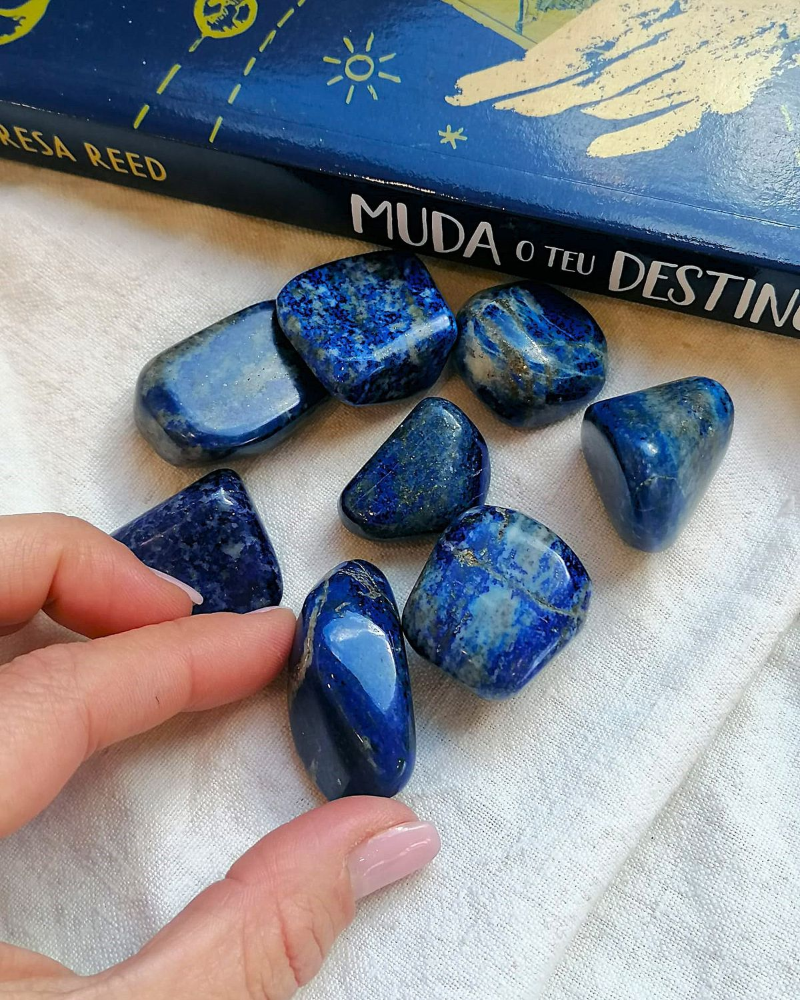
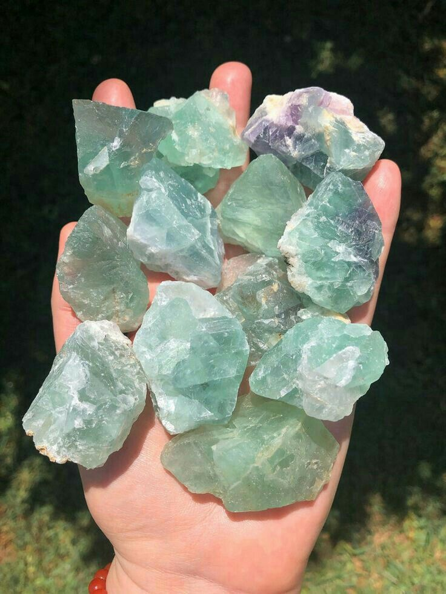

Ametista
R$ 79,90
Significado da Ametista
- Espiritualidade: Favorece a meditação e a conexão com planos superiores.
- Proteção: Considerada um escudo contra energias negativas e pensamentos nocivos.
- Equilíbrio mental: Ajuda a acalmar a mente, reduzir estresse e ansiedade.
- Sabedoria: Estimula clareza de pensamento e tomada de decisões conscientes.
- Transformação: Auxilia em processos de mudança e crescimento pessoal.

Quartzo Rosa
R$ 59,90
Significado do Quartzo Rosa
- Amor: É conhecido como a pedra do amor incondicional.
- Afeto e relacionamentos: Estimula empatia, perdão e fortalece vínculos afetivos.
- Equilíbrio emocional: Ajuda a acalmar mágoas e promove paz interior.
- Autoestima: Favorece o amor-próprio e a aceitação pessoal.
- Harmonia: Atrai energias positivas e suaviza ambientes.

Citrino
R$ 69,90
Significado do Citrino
- Prosperidade: É chamado de “pedra da riqueza”, associado à abundância e sucesso financeiro.
- Alegria: Estimula otimismo, entusiasmo e bem-estar.
- Energia vital: Recarrega disposição física e mental, afastando cansaço.
- Clareza mental: Favorece foco, criatividade e tomada de decisões.
- Proteção energética: Dissipa energias negativas e promove equilíbrio.

Turmalina Negra
R$ 89,90
Significado da Turmalina Negra
- Proteção energética: Atua como um escudo contra energias negativas e ataques espirituais.
- Aterramento: Conecta à energia da Terra, trazendo estabilidade e segurança.
- Equilíbrio emocional: Ajuda a reduzir ansiedade e medos, promovendo calma interior.
- Transmutação: Converte vibrações densas em energias mais leves e positivas.
- Força pessoal: Estimula coragem e confiança diante de desafios.

Selenita
R$ 49,90
Significado da Selenita
- Purificação energética: Dissipa energias negativas e promove equilíbrio.
- Espiritualidade: Facilita a conexão com planos superiores e fortalece a intuição.
- Serenidade: Traz calma, paz interior e sensação de segurança.
- Transmutação: Transforma vibrações densas em energias mais leves.
- Energização: Recarrega outros cristais, sendo considerada um “cristal mestre”.

Pedra da lua
R$ 79,90
Significado da Pedra da Lua
- Energia feminina: Representa fertilidade, ciclos naturais e o sagrado feminino.
- Intuição: Estimula sonhos, percepções e espiritualidade.
- Equilíbrio emocional: Ajuda a acalmar e harmonizar sentimentos.
- Proteção: Usada como amuleto contra energias negativas.

Lápis Lazúli
R$ 99,90
Significado do Lápis-Lazúli
- Sabedoria: Estimula o aprendizado, a clareza mental e a busca por conhecimento.
- Verdade: Favorece a expressão autêntica e a comunicação sincera.
- Espiritualidade: Conecta com planos superiores e amplia a intuição.
- Proteção: Usado como amuleto contra energias negativas e influências externas.
- Autoconfiança: Fortalece a autoestima e ajuda na tomada de decisões.

Fluorita
R$ 69,90
Significado da Fluorita
- Clareza mental: Ajuda a organizar pensamentos e tomar decisões com mais consciência.
- Concentração: Favorece estudos, aprendizado e foco em tarefas importantes.
- Equilíbrio energético: Harmoniza os chakras e estabiliza emoções.
- Proteção espiritual: Atua como escudo contra influências externas negativas.
- Transformação: Auxilia em processos de mudança e crescimento pessoal.